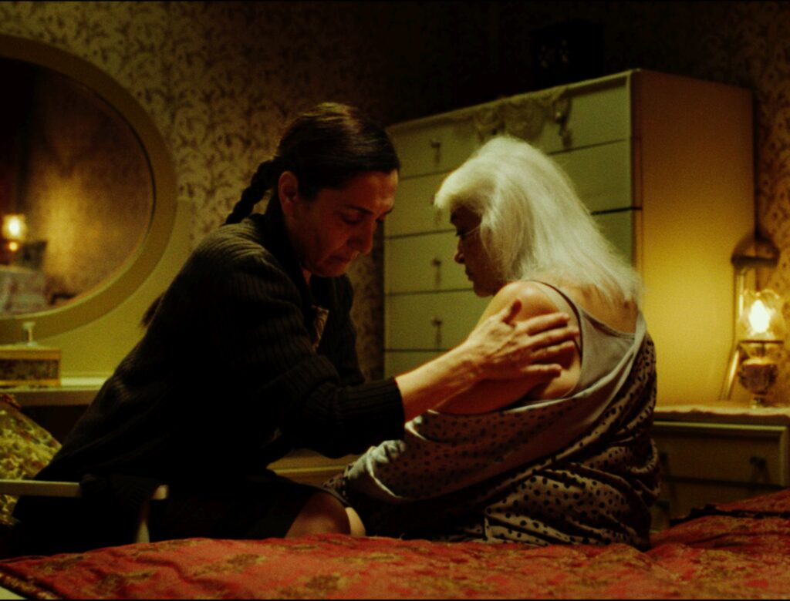

13 - 17 ARALIK
Documentarist’in düzenlediği Hangi İnsan Hakları? Film Festivali dostlarının da desteğiyle bu yıl 15. kez gerçekleşiyor. Türkiye’den ve dünyadan hak ihlal ve mücadelelerini konu alan filmlerin yanı sıra güncel meselelere dair etkinlikleriyle de dikkat çeken festival bu yıl ‘Bakım Emeği’ temasında düzenleniyor. Her sene olduğu gibi bu yıl da dolu dolu bir program sunan festivalde filmler Türkiye’den Fas’a, Gazze’den İzlanda’ya, İran’dan Brezilya’ya uzanıyor. Göç, kimlik, ekoloji, toplumsal hafıza gibi konularda elli filmi bir araya getiren festivalin açılış filmi ise Çayan Demirel ve Ayşe Çetinbaş’ın birlikte yönettiği Kardeş Türküler ile 30 Yıl (2025). 13-17 Aralık tarihlerinde gerçekleşecek festival İstanbul’un iki yakasına yayılırken, gösterim ve etkinliklere Fransız Kültür Merkezi, Pera Müzesi, Aynalı Geçit Etkinlik Mekânı, Postane, Bağlarbaşı Kültür Merkezi (Üsküdar) ve TAK (Kadıköy) ev sahipliği yapacak.

Festivalin ‘Bakım Emeği’ seçkisinde dünya prömiyerini Amsterdam Belgesel Film Festivali’nde (IDFA) yapan ve İstanbul Film Festivali’nin Ulusal Belgesel Yarışması’nda En İyi Belgesel ödülü kazanan Eat Your Catfish (2021) öne çıkıyor. Senem Tüzen, Adam Isenberg ve Noah Amir Arjomand’ın birlikte imza attıkları film, ALS hastalığıyla mücadele eden tamamen bakıma muhtaç bir kadın üzerinden aile bağlarını sorguluyor. Film ekibi olmadan, Kathryn’in tekerlekli sandalyesine sabitlenen bir kameradan çıkan 930 saatlik görüntünün kurgulanmasıyla hazırlanan filmde kırılmanın eşiğindeki bir ailenin mahremi çekincesiz olarak yansıtılıyor. Adana Altın Koza’da Film-Yön En İyi Yönetmen ve En İyi Senaryo ödüllerine layık bulunan Erkan Tahhuşoğlu imzalı Döngü‘nün (2024) de yer aldığı seçki kapsamında Emel Çelebi imzalı Külkedisi Değiliz! (Ain’t No Cinderellas!, 2014), Sébastien Lifshitz imzalı Madame Hofmann (2023), Nicolas Peduzzi imzalı Sınırda (On the Edge, 2023), Pamela Hogan imzalı İzlanda’nın Durduğu Gün (The Day Iceland Stood Still, 2024), Serwa Aliveisy imzalı Rojin’in Rüyası (Rojin’s Dream, 2024) filmlerini izlemek mümkün. Ekolojik yıkımları konu alan belgeselleri ‘Tükettiğimiz Dünya’, kadınların ve LGBTİ+’lara dair filmleri ise ‘Kadın ve KGBTİ+ Hakları’ bölümlerinde bir araya getiren festivalde bunlara ek olarak sokak ortasında katledilen gazeteci, belgeselci ve aktivist Hakan Tosun’a özel bir seçki yer alıyor. Türkiye’deki çevre direnişlerine kamerasıyla tanıklık eden, hayvanları, doğayı, yaşam alanlarını ve bunlar için mücadele edenleri belgeleyen Tosun anısına hazırlanan seçkide Validebağ Direnişi (2011), Kaz Dağları Talanı: Ne Uğruna… (2021), İliç Altın Madeni (2024) ve “Geldiler ve tapulu mallarımıza el koydular!”(2025) olmak üzere her biri kendi imzasını taşıyan dört belgesel yer alıyor. Bu bağlamda 16 Aralık’ta Bağlarbaşı Kültür Merkezi’nde Validebağ Gönüllüleri ile “Hakan Tosun İçin Adalet!” buluşması, 17 Aralık’ta ise Postane’de “Direnişin Belgeselcisi Hakan Tosun” başlıklı söyleşi düzenlenecek. Ayrıca ‘Tükettiğimiz Dünya’ bölümündeki filmlerin bir kısmı, Documentarist’in CultureCIVIC destekli programı kapsamında önümüzdeki bir yıl boyunca 15 ayrı kenti dolaşacak.
‘Panoroma’ seçkisinde ise İmre Azem’in Hatay belgeselleri serisinin dördüncü filmi Hatay: 24 Aralık 2024 – 8 Ocak 2025 Adalet Peşinde Aileleri Platformu ve karakterlerin katılımıyla yeniden gösterilirken, serinin beşinci ve son halkası olan Hatay: 12-24 Eylül 2025 de festival kapsamında seyirciyle buluşuyor. Alain Kassanda imzalı Coconut Kafa Nesli (Coconut Head Generation, 2023), Kamal Aljafari imzalı Hasan’la Gazze’de (Ma’ Hasan Fi Ghazza, 2024), Fırat Yücel imzalı mutluluk(happiness, 2025), Bingöl Elmas imzalı Yeni Han (2025) ve Eren Kahraman imzalı Son Büyük Simge: Surp Giragos Kilisesi (The Last Great Icon Surp Giragos Church, 2025) seçkide dikkat çeken filmlerden bazıları.
15. Hangi İnsan Hakları? Film Festivali kapsamındaki etkinlik ve gösterimlerin tamamı ücretsiz. Program takvimine festivalin internet sitesi üzerinden ulaşmak mümkün.